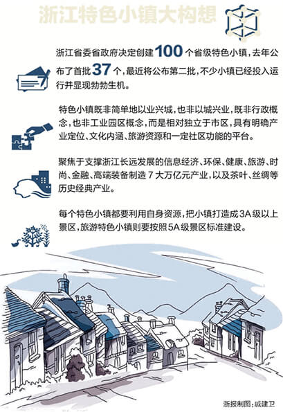

风暴来袭―特色小镇建设分布
2016年，1000个特色小镇国家目标提出，7个省（直辖市）开展特色小镇建设 。
2016年，部署11234重点任务，包括建设100个特色小镇
2016年，提出培育一批特色小镇，小镇示范点数量为30个左右
2012年，提出十二五期间规划开发50个特色风情旅游小镇；2012年，提出至2015年建成100个特色小城镇；2016年，提出保护和发展民族特色小镇
2011年，提出以旅游小镇建设为重点，努力发展不同类型的特色小镇
2016年，每年选择2-3个示范镇，各市县至少选择1个重点镇逐年推进，建设一批特色风情小镇
2016年，国家三部委明确到2020年培育1000个特色小镇
2016年， 省财政厅拨付1.1亿元支持特色小镇发展
2015年1月21日，浙江省委省政府提出培育和规划建设100个左右特色小镇
2016年，十三五规划提出建设100个特色旅游小镇
2016年，到2017年建成30―50个省级特色小镇，到2020年建成100个左右省级特色小镇
动力之源―发展原因探析
动力一：基于国情的政策意见推动
新农村建设
十六届五中全会通过《中共中央关于制定国民经济和社会发展第十一个五年规划的建议》首次提出了“建设社会主义新农村”的重大历史任务。
2006年，《中共中央国务院关于推进社会主义新农村建设的若干意见》中发〔2006〕1号出台，提出协调推进新农村建设。
继十七大之后，十八大提出“深入推进新农村建设”…
新型城镇化
十八大提出把推进新型城镇化作为今后十年经济发展的重大战略举措。
2016年2月6日，国务院印发《关于深入推进新型城镇化建设的若干意见》，全面部署深入推进新型城镇化建设。
2016年全国两会热点之一：新型城镇化。
特色小镇建设
《国民经济和社会发展第十三个五年规划纲要》提出要发展充满魅力的小城镇。
《关于深入推进新型城镇化建设的若干意见》提出发展具有特色优势魅力小镇。
《关于开展特色小城镇培育工作的通知》建村[2016]147号，提出在全国范围内开展特色小城镇培育工作，到2020年争取培育1000个左右各具特色、富有活力的特色小镇。
“特色小镇建设”是国家新农村建设、新型城镇化在新时期、新常态下的“新举措、新模式”
动力二：基于实效的财政土地支持
- 国家发展改革委等有关部门支持符合条件的特色小镇建设项目申请专项建设基金
- 中央财政对工作开展较好的特色小镇给予适当奖励
国家层面：专项建设基金、适当奖励
- 土地支持：如期完成年度规划目标任务的，省里按实际使用指标的50%或60%给予配套奖励，对3年内未达到规划目标任务的，加倍倒扣省奖励的用地指标。
- 财政支持：特色小镇创建期间及验收命名后，规划空间范围内的新增财政收入上交省财政部分，前3年全额返还、后2年返还一半给当地财政。
- 行政支持：特色小镇定位为综合改革试验区，拥有优先上报、优先实施、先行突破权。
- 财政支持：山东省财政厅拨付首批特色小镇创建启动资金1.1亿元，用于支持特色小镇发展。
浙江省
山东省
说明：浙江特色小镇建设相对起步较早，制度措施较为完善，其他各省旅游小镇建设刚刚启动，奖励制度与措施暂未成熟，但初现端倪。
动力三：基于浙江的成功示范效应
五大战略意义
- 1.有效扩大投资
- 2.推动人才、技术、资本等高端要素集聚，实现小空间大作为、小平台大发展
- 3.推动经济产业的融合、创新和升级，引领经济新常态
- 4.弘扬传统优秀文化
- 5.推进新型城镇化，创造优美宜人的人居环境
多方借鉴研讨与学习
新闻链接1：国家发改委首次权威发布特色小镇案例！
2016年2月25日，国家发展改革委举行新闻发布会，浙江、贵州两省相关的干部着重围绕浙江杭州云栖小镇、贵州安顺西秀区旧州镇介绍了各自特色…
动力四：基于现实的特色发展需求
浙江
有限局促的陆域建设空间；个体私营经济比重大；经济总量增速减缓；市场供给丰度不足；块状经济分布；消费需求外溢…
山东
要素吸纳和集聚能力不强；城镇管理效能不高；产业层次不高…
广东
产业园区、特色小城镇等发展基础较好；岭南风情独特……
重庆
独特的地理空间与用地空间；农副产品、零部件、轻纺等产业发达；自然资源独特；历史人文丰富……
共同选择